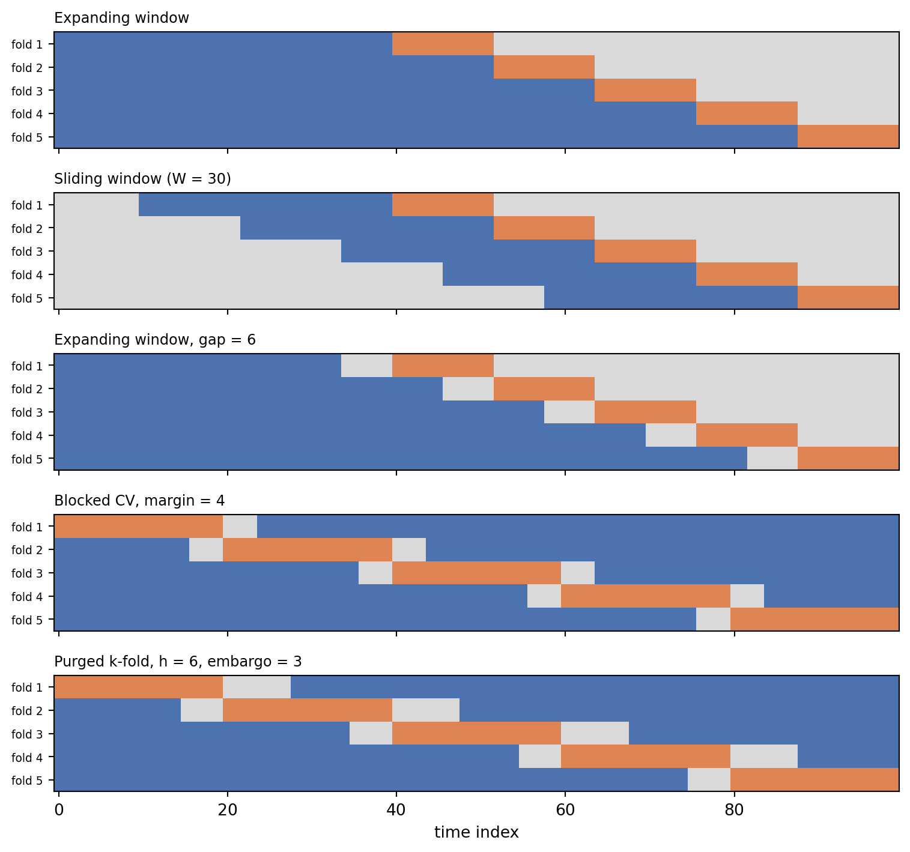
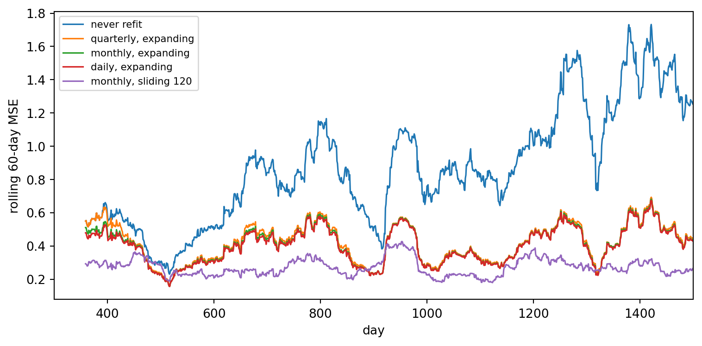

A model that forecasts demand, scores credit applications, or trades on market signals is always deployed in the same direction: it is trained on the past and asked about the future. Its validation should respect that direction. Ordinary \(k\)-fold cross-validation does not. It shuffles rows into folds as though they were exchangeable draws from one fixed distribution, which lets the model study Wednesday before being tested on Tuesday. When observations are autocorrelated, when labels are built from overlapping future windows, or when the world drifts, a shuffled split can report an error that is a fraction of what the model will achieve in production.
The Cross-Validation Techniques chapter introduces forward chaining and rolling windows in a few paragraphs, alongside grouped and nested cross-validation. This chapter is the deep dive. We first measure how badly a shuffled split can mislead, and when it does not. We then build the family of time-aware schemes: expanding and sliding windows, gaps, purged \(k\)-fold with an embargo, blocked cross-validation, nested time-series cross-validation for tuning, walk-forward backtests with periodic refits, and splits for panel data in which many entities are observed over time. Every scheme is implemented and compared against a “lockbox” of truly future data so that we can see which estimates are honest.
88.1 What Goes Wrong with Shuffled Splits
88.1.1 Three sources of leakage
Let \(\{(x_t, y_t)\}_{t=1}^{T}\) be a time-indexed dataset and let \(\hat f_{-S}\) denote a model fit without the observations in a test set \(S\). Cross-validation estimates the deployment risk
by the average of \(\ell(y_t, \hat f_{-S}(x_t))\) over held-out \(t \in S\). The estimate is unbiased only if the relationship between training and test data inside the cross-validation loop mirrors the relationship between \(1{:}T\) and \(T+h\) at deployment. Three things break that mirror (reference 11).
Serial dependence. If \(y_t\) is correlated with \(y_{t \pm 1}\), a test observation has near-duplicates in the training set on both sides. A flexible model can interpolate between them, a skill that has no counterpart when forecasting beyond the end of the data.
Overlapping labels. When the target is a quantity over a future window, such as the return over the next twenty days or whether a customer defaults in the next twelve months, labels of neighboring observations share most of their information. A training row at \(t-1\) whose label window overlaps the test row’s window effectively reveals part of the test label.
Nonstationarity. If the data-generating process drifts, a shuffled split trains on a mixture of all regimes and tests on the same mixture. Deployment always tests on a regime newer than anything in training.
88.1.2 When shuffling is fine
Shuffled cross-validation is not always wrong. Bergmeir, Hyndman, and Koo proved that for a purely autoregressive model whose lagged inputs capture the dependence, so that the residuals are uncorrelated, standard \(k\)-fold cross-validation is valid and often more efficient than out-of-sample evaluation, because it uses all the data (reference 3). The danger is in the conditions. Residual autocorrelation, features that vary smoothly with time, and flexible learners that can memorize neighborhoods all void the result.
The next block makes both cases concrete. The first series is a stationary AR(2) process modeled with its own lags, the setting of the Bergmeir, Hyndman, and Koo result. The second is a local-level series whose mean wanders as a random walk, modeled by a \(k\)-nearest-neighbors regressor that sees calendar features (a time index and a day-of-year cycle). In each case we hold out the final fifth of the series as a lockbox, run cross-validation on the first four fifths, and compare each cross-validated estimate with the error the model actually makes on the lockbox after being refit on all of the development data. Because a single random-walk path is a noisy yardstick, every number is averaged over ten independently simulated series.
Code
import timeimport numpy as npimport pandas as pdfrom sklearn.linear_model import Ridgefrom sklearn.metrics import mean_squared_errorfrom sklearn.model_selection import KFold, TimeSeriesSplit, cross_val_scorefrom sklearn.neighbors import KNeighborsRegressorfrom sklearn.pipeline import make_pipelinefrom sklearn.preprocessing import StandardScalert_start = time.perf_counter()rng = np.random.default_rng(1202)T =1500def series_a(rng, T=T, lags=5):"""Stationary AR(2), features are its own lags.""" eps = rng.normal(0, 1, T +50) ar = np.zeros(T +50)for t inrange(2, T +50): ar[t] =0.6* ar[t -1] +0.25* ar[t -2] + eps[t] ar = ar[50:] X = np.column_stack([ar[lags - j -1: T - j -1] for j inrange(lags)])return X, ar[lags:]def series_b(rng, T=T):"""Local level (random-walk mean) plus noise, calendar features only.""" level = np.cumsum(rng.normal(0, 0.15, T)) y = level + rng.normal(0, 0.5, T) day = np.arange(T) X = np.column_stack([day, np.sin(2* np.pi * day /365), np.cos(2* np.pi * day /365)])return X, ydef compare_schemes(X, y, model, dev_frac=0.8): n_dev =int(dev_frac *len(y)) Xd, yd, Xl, yl = X[:n_dev], y[:n_dev], X[n_dev:], y[n_dev:] schemes = {"shuffled 5-fold": KFold(5, shuffle=True, random_state=0),"unshuffled 5-fold": KFold(5, shuffle=False),"expanding window": TimeSeriesSplit(5), } out = {name: -cross_val_score(model, Xd, yd, cv=cv, scoring="neg_mean_squared_error").mean()for name, cv in schemes.items()} out["lockbox (truth)"] = mean_squared_error(yl, model.fit(Xd, yd).predict(Xl))return pd.Series(out)ridge = make_pipeline(StandardScaler(), Ridge(alpha=1.0))knn = make_pipeline(StandardScaler(), KNeighborsRegressor(n_neighbors=10))# Average over independent replications: a single random-walk path is too noisy# to compare estimators of its own forecast error.n_rep =10leak_table = pd.concat([ pd.concat([compare_schemes(*series_a(rng), ridge) for _ inrange(n_rep)], axis=1) .mean(axis=1).rename("A: AR(2) + lag features + ridge"), pd.concat([compare_schemes(*series_b(rng), knn) for _ inrange(n_rep)], axis=1) .mean(axis=1).rename("B: drifting level + calendar features + kNN"),], axis=1)print(f"Mean squared error estimates, averaged over {n_rep} simulated series")print(leak_table.round(3))
Mean squared error estimates, averaged over 10 simulated series
A: AR(2) + lag features + ridge \
shuffled 5-fold 1.007
unshuffled 5-fold 1.008
expanding window 1.011
lockbox (truth) 0.990
B: drifting level + calendar features + kNN
shuffled 5-fold 0.306
unshuffled 5-fold 5.375
expanding window 4.915
lockbox (truth) 3.846
The two columns tell opposite stories. For the autoregressive series every scheme lands near the lockbox error, exactly as the theory predicts, so the choice of scheme barely matters. For the drifting series the shuffled estimate is a small fraction of the lockbox error. The nearest-neighbor model, given a time index, simply averages the observations on either side of each held-out day, which is interpolation. On the lockbox it must extrapolate, and the time index it relied on now points outside the training range. The expanding-window estimate is far closer to the truth because it asks the model to do in validation what it will do in deployment. It errs on the pessimistic side, since its early folds train on short histories. Unshuffled \(k\)-fold also comes out pessimistic here, for a different reason. Its contiguous folds remove the interpolation shortcut, but each interior fold asks the model to bridge a gap in the middle of the series and the first fold asks it to forecast backward in time, neither of which matches deployment.
88.2 Forward Validation Schemes
88.2.1 Expanding and sliding windows
Forward validation, also called evaluation on a rolling forecasting origin (reference 5), fixes a sequence of origins \(\tau_1 < \tau_2 < \dots < \tau_K\). At origin \(\tau_k\) the model is trained on a window ending at \(\tau_k\) and tested on the next \(H\) observations:
\[
\mathcal{T}_k = \{t : \tau_k - W < t \le \tau_k\}, \qquad
\mathcal{S}_k = \{t : \tau_k + g < t \le \tau_k + g + H\}.
\]
An expanding window sets \(W = \infty\), so each training set contains all history. A sliding window (or rolling window) keeps \(W\) fixed. Expanding windows have lower variance and suit stable processes. Sliding windows discard stale data and suit processes with drift, at the cost of fitting on less data. Many teams run both, because the comparison itself is a cheap test for nonstationarity: if the sliding window wins, old data is hurting.
The parameter \(g \ge 0\) is a gap between the end of training and the start of the test window. A gap is needed whenever the forecast horizon exceeds one step. If a production model is retrained on Sunday night and used to forecast demand two to eight days ahead, validation must also leave a two-day hole after each training cutoff, otherwise the validated model sees data the production model will not have. scikit-learn’s TimeSeriesSplit implements all three knobs through max_train_size, test_size, and gap.
88.2.2 Blocked cross-validation
Forward schemes use the early data only for training and the late data only for testing, which can waste data when the series is short. Blocked cross-validation splits the series into \(K\) contiguous blocks and uses each in turn as the test set, as unshuffled \(k\)-fold does, but removes a margin of \(v\) observations on each side of the test block from the training set. This is the \(hv\)-block scheme of Burman, Chow, and Nolan and of Racine (reference 7, reference 8). The margin breaks short-range serial dependence across the boundary. Bergmeir and Benítez compared these schemes on real and synthetic series and found blocked cross-validation competitive with and often more stable than single-origin holdout for stationary series (reference 1). Cerqueira, Torgo, and Mozetič reached a more conditional verdict on a large benchmark: blocked cross-validation does well for stationary series, while forward schemes with repeated origins are safer when the series is nonstationary (reference 4).
88.2.3 Purged k-fold with an embargo
Financial machine learning sharpened the blocked idea for labels that span time. López de Prado describes each observation \(i\) as having an information interval\([t_{i,0}, t_{i,1}]\), the span of time that its label depends on (reference 2). A twenty-day forward return observed at \(t\) has interval \([t+1, t+20]\). For a contiguous test fold \(S\) let \([a_S, b_S]\) be the union span of its label intervals. Purging removes from training every observation whose interval overlaps that span:
\[
\mathcal{T}_S = \{\, i \notin S : t_{i,1} < a_S \ \ \text{or} \ \ t_{i,0} > b_S + e \,\}.
\]
The extra embargo\(e\) after the test fold handles the opposite leak. Training rows just after the test fold have features computed from trailing windows (momentum, rolling volatility) that include returns from inside the test labels. The embargo, typically about one percent of the sample or one label horizon, drops them. Purged \(k\)-fold keeps the data efficiency of \(k\)-fold, every observation is tested once, while closing both leaks. It still trains on data after the test fold, which is acceptable when the process is stationary and the goal is to estimate a stable relationship. It is not a substitute for a forward backtest when the process drifts.
Code
import matplotlib.pyplot as pltfrom matplotlib.colors import ListedColormapdef purged_kfold(t0, t1, n_splits=5, embargo=0):"""Contiguous k-fold that purges label overlap and embargoes after each test fold. t0, t1: arrays with the first and last time index each label depends on. Yields (train_idx, test_idx, removed_idx). """ n =len(t0) idx = np.arange(n)for test in np.array_split(idx, n_splits): a, b = t0[test].min(), t1[test].max() keep = (t1 < a) | (t0 > b + embargo) keep[test] =False removed = np.setdiff1d(idx[~keep], test)yield idx[keep], test, removeddef blocked_cv(n, n_splits=5, margin=0): idx = np.arange(n)for test in np.array_split(idx, n_splits): keep = (idx < test.min() - margin) | (idx > test.max() + margin)yield idx[keep], test, np.setdiff1d(idx[~keep], test)n_demo, h =100, 6t0_demo = np.arange(n_demo) +1t1_demo = np.minimum(np.arange(n_demo) + h, n_demo -1)def as_matrix(splits, n): rows = []for tr, te, *rest in splits: r = np.full(n, 0) # 0 = unused r[tr] =1 r[te] =2 rows.append(r)return np.array(rows)def ts_splits(**kw):for tr, te in TimeSeriesSplit(**kw).split(np.zeros(n_demo)):yield tr, tepanels = {"Expanding window": as_matrix(ts_splits(n_splits=5, test_size=12), n_demo),"Sliding window (W = 30)": as_matrix(ts_splits(n_splits=5, test_size=12, max_train_size=30), n_demo),"Expanding window, gap = 6": as_matrix(ts_splits(n_splits=5, test_size=12, gap=6), n_demo),"Blocked CV, margin = 4": as_matrix(blocked_cv(n_demo, 5, margin=4), n_demo),"Purged k-fold, h = 6, embargo = 3": as_matrix(purged_kfold(t0_demo, t1_demo, 5, embargo=3), n_demo),}cmap = ListedColormap(["#d9d9d9", "#4c72b0", "#dd8452"])fig, axes = plt.subplots(len(panels), 1, figsize=(8, 7.5), sharex=True)for ax, (title, m) inzip(axes, panels.items()): ax.imshow(m, aspect="auto", cmap=cmap, vmin=0, vmax=2, interpolation="nearest") ax.set_title(title, fontsize=9, loc="left") ax.set_yticks(range(len(m))) ax.set_yticklabels([f"fold {i +1}"for i inrange(len(m))], fontsize=7)axes[-1].set_xlabel("time index")fig.tight_layout()plt.show()

Figure 88.1: Five time-aware splitting schemes on a series of 100 observations. Blue cells are training data, orange cells are test data, and grey cells are purged, embargoed, or gap observations that neither set may use.
88.2.4 Purging in action
To see why purging matters, simulate daily returns that are pure noise, so that nothing is predictable and the true out-of-sample \(R^2\) of any model is at most zero. The label is the sum of the next twenty returns and the features are trailing sums over twenty, sixty, one hundred twenty, and two hundred fifty days. These are the momentum features a quantitative analyst would actually try. Because consecutive labels share nineteen of their twenty terms and consecutive features are nearly identical, a nearest-neighbor model can find, for each test day, training days whose labels overlap its own.
We compare four estimates of \(R^2\): shuffled \(k\)-fold, unshuffled \(k\)-fold, purged \(k\)-fold with an embargo, and the truth, obtained by fitting on the whole development path and scoring on an independent future path.
Code
WINDOWS = (20, 60, 120, 250) # trailing return windows in daysdef momentum_dataset(n, h=20, rng=None): r = rng.normal(0, 0.01, n +max(WINDOWS) + h) csum = np.concatenate([[0.0], np.cumsum(r)]) t = np.arange(max(WINDOWS), max(WINDOWS) + n) X = np.column_stack([csum[t +1] - csum[t +1- w] for w in WINDOWS]) y = csum[t +1+ h] - csum[t +1] # sum of r[t+1 .. t+h]return X, y, t +1, t + h # label interval [t+1, t+h]h =20X_dev, y_dev, lab0, lab1 = momentum_dataset(2000, h, rng)X_new, y_new, _, _ = momentum_dataset(2000, h, rng)model = make_pipeline(StandardScaler(), KNeighborsRegressor(n_neighbors=15))def r2(y_true, y_pred):return1- np.sum((y_true - y_pred) **2) / np.sum((y_true - y_true.mean()) **2)def cv_r2(splits): scores = []for tr, te, *rest in splits: model.fit(X_dev[tr], y_dev[tr]) scores.append(r2(y_dev[te], model.predict(X_dev[te])))return np.mean(scores)purge_table = pd.Series({"shuffled 5-fold": cv_r2(KFold(5, shuffle=True, random_state=0).split(X_dev)),"unshuffled 5-fold": cv_r2(KFold(5).split(X_dev)),"purged 5-fold + embargo": cv_r2(purged_kfold(lab0, lab1, 5, embargo=h)),"truth (independent future path)": r2(y_new, model.fit(X_dev, y_dev).predict(X_new)),}, name="R^2")print(purge_table.round(3))
The shuffled estimate reports substantial predictive power on a series that has none. The purged estimate, like the truth, is below zero, which is the correct answer for unpredictable returns (a nearest-neighbor average of pure noise does worse than predicting the mean). Unshuffled contiguous folds land close to the purged estimate here, because with five large folds only a few dozen rows sit near each boundary. That closeness is luck of the configuration, not a guarantee. With more folds, longer label horizons, or longer feature windows the boundary leak grows, and purging is the step that removes it by construction. Bailey, Borwein, López de Prado, and Zhu show how easily such leaks combine with strategy selection to produce backtests that are almost certainly overfit, and they give a cross-validation procedure for estimating the probability of that outcome (reference 9).
88.3 Tuning Without Peeking: Nested Time-Series Cross-Validation
Hyperparameters chosen by cross-validation and then scored on the same folds yield an optimistic estimate, because the winning configuration is partly the one whose noise happened to be favorable (reference 6). The Cross-Validation Techniques chapter derives this selection bias in general. The time-series version of the cure nests two forward loops. The outer loop is a walk-forward backtest over origins \(\tau_1, \dots, \tau_K\). At each origin the inner loop runs its own forward validation using only data before \(\tau_k\), picks a configuration, refits it on all data before \(\tau_k\), and scores the next block. The outer scores are the performance estimate. The selected configuration may differ across origins, which is informative in itself: an unstable choice is a sign that the tuning signal is weak.
Code
from itertools import product# A seasonal demand series with drift and weekly pattern.T2 =1200d = np.arange(T2)demand = (20+0.004* d +3* np.sin(2* np.pi * d /7) +2* np.sin(2* np.pi * d /365)+ np.convolve(rng.normal(0, 1.2, T2 +6), np.ones(7) /7, mode="valid"))def lag_matrix(series, n_lags): X = np.column_stack([series[n_lags - j -1: len(series) - j -1] for j inrange(n_lags)])return X, series[n_lags:]grid =list(product([7, 14, 28], [1, 5, 15, 40])) # (n_lags, k)def make_model(k):return make_pipeline(StandardScaler(), KNeighborsRegressor(n_neighbors=k))max_lags =max(g[0] for g in grid)def design(n_lags): X, y = lag_matrix(demand, n_lags)return X[max_lags - n_lags:], y[max_lags - n_lags:] # align all designsdesigns = {L: design(L) for L, _ in grid}n_obs =len(designs[7][1])outer = TimeSeriesSplit(n_splits=6, test_size=60, gap=0)inner_cv = TimeSeriesSplit(n_splits=4, test_size=60)nested_scores, naive_scores, chosen = [], [], []for tr, te in outer.split(np.zeros(n_obs)): inner = {}for L, k in grid: X, y = designs[L] inner[(L, k)] =-cross_val_score(make_model(k), X[tr], y[tr], cv=inner_cv, scoring="neg_mean_squared_error").mean() best =min(inner, key=inner.get) chosen.append(best) naive_scores.append(inner[best]) # score of the winner on the folds that chose it X, y = designs[best[0]] m = make_model(best[1]).fit(X[tr], y[tr]) nested_scores.append(mean_squared_error(y[te], m.predict(X[te])))print("Configurations chosen at each outer origin (n_lags, k):", chosen)print(f"Non-nested estimate (best inner MSE): {np.mean(naive_scores):.3f}")print(f"Nested walk-forward estimate (outer MSE): {np.mean(nested_scores):.3f}")
The non-nested number is the minimum over a grid of noisy inner estimates, and the nested number is what that procedure actually delivers one block ahead. Whatever the size of the gap on a given dataset, only the nested figure is an estimate of deployment error. The list of chosen configurations shows how stable the tuning decision is across origins.
88.4 Backtesting with Refits
A forward backtest is more than a validation scheme. It is a simulation of the production process, and it should include the production retraining policy. A model refit daily and a model refit quarterly are different systems, and under drift they have different errors. The next block simulates a regression whose coefficient drifts slowly, then compares walk-forward backtests that refit every day, every month, every quarter, or never, each with an expanding window, and one that refits monthly on a sliding window.
Code
T3 =1500beta =1.0+ np.cumsum(rng.normal(0, 0.03, T3)) # drifting slopex3 = rng.normal(0, 1, T3)y3 = beta * x3 + rng.normal(0, 0.5, T3)X3 = x3[:, None]start =300def walk_forward(refit_every, window=None): preds = np.full(T3, np.nan) model =Nonefor t inrange(start, T3):if model isNoneor (refit_every and (t - start) % refit_every ==0): lo =0if window isNoneelsemax(0, t - window) model = Ridge(alpha=1e-3).fit(X3[lo:t], y3[lo:t]) preds[t] = model.predict(X3[t:t +1])[0]return predspolicies = {"never refit": walk_forward(0),"quarterly, expanding": walk_forward(90),"monthly, expanding": walk_forward(30),"daily, expanding": walk_forward(1),"monthly, sliding 120": walk_forward(30, window=120),}fig, ax = plt.subplots(figsize=(8, 4))summary = {}for name, p in policies.items(): se = pd.Series((y3 - p) **2) summary[name] = se[start:].mean() ax.plot(se.rolling(60).mean(), label=name, lw=1.2)ax.set_xlim(start, T3)ax.set_xlabel("day")ax.set_ylabel("rolling 60-day MSE")ax.legend(fontsize=8)fig.tight_layout()plt.show()print(pd.Series(summary, name="backtest MSE").round(3))

Figure 88.2: Walk-forward backtest under a slowly drifting coefficient. Rolling 60-day mean squared error for different retraining cadences and window types. Models that are never refit decay steadily, while frequent refits on a sliding window track the drift.
Under drift the expanding window is a liability. Even a daily refit on all history averages over coefficients that no longer apply, while the monthly sliding window tracks the drift with a thirtieth of the refits. Under a stable process the ranking would flip, which is exactly why the retraining policy has to be part of the backtest rather than an afterthought. Two details matter in real backtests. Each refit must use only data that would have been available at that moment, including reporting lags and late-arriving corrections (an “as-of” or point-in-time database). And the cadence chosen should be validated on a period that was not used to choose it, which is the nested principle again.
88.5 Panel Data: Many Entities Over Time
88.5.1 The positional split bug
Many business datasets are panels: customers by month, stores by week, patients by visit. A common mistake, and one that appeared in an earlier draft of this material, is to sort the panel by entity and then month and hand it to TimeSeriesSplit. TimeSeriesSplit splits by row position, not by time. On an entity-sorted panel its “earlier” rows are the first customers and its “later” rows are the last customers, so every fold trains on all months of some customers and tests on all months of others. That is an entity split, not a time split, and it trains on the future.
fold 1: train months 1-24, test months 1-24, customers shared by train and test: 0
fold 2: train months 1-24, test months 1-24, customers shared by train and test: 0
fold 3: train months 1-24, test months 1-24, customers shared by train and test: 0
Every fold trains on months 1 through 24 and tests on months 1 through 24. The split is out of customer but not out of time.
88.5.2 Matching the split to the deployment question
The right split depends on the question the model will answer in production.
Score existing customers next month. Train on months up to \(m\) for all customers, test on month \(m + 1\) (plus a gap if outcomes take time to observe). Entities may overlap, time may not.
Score new applicants. Train on customers in set \(A\) up to month \(m\), test on customers in set \(B\) after month \(m\). Neither entities nor time may overlap.
Understand cross-sectional risk at a fixed date. A grouped split by entity within a single period is acceptable, but it is a different question from forecasting.
The next block scores a logistic regression under four schemes and compares each with the matching lockbox: defaults in the final six months, for both existing and brand-new customers. Default risk depends on a customer’s latent propensity (seen only through a noisy bureau score), on utilization, and on a monthly macro shock shared by everyone. The month enters the model as a one-hot feature, the kind of innocent-looking column that lets a model learn contemporaneous macro shocks from other customers when time leaks. When the test months are genuinely in the future, their one-hot columns were never seen in training and contribute nothing, which is exactly the situation at deployment.
Code
from sklearn.compose import ColumnTransformerfrom sklearn.linear_model import LogisticRegressionfrom sklearn.metrics import roc_auc_scorefrom sklearn.preprocessing import OneHotEncoderfeatures = ["score", "util", "month"]clf = make_pipeline( ColumnTransformer([("num", StandardScaler(), [0, 1]), ("month", OneHotEncoder(handle_unknown="ignore"), [2])]), LogisticRegression(max_iter=1000))Xp, yp = panel[features].to_numpy(), panel["default"].to_numpy()def cv_auc(splits):return np.mean([roc_auc_score(yp[te], clf.fit(Xp[tr], yp[tr]).predict_proba(Xp[te])[:, 1])for tr, te in splits])dev = panel.month <=18new_cust = panel.customer >=750# customers held out entirely for the lockboxdef out_of_time(df, first_test=7, horizon=6):for m inrange(first_test, 19, horizon): tr = np.where((df.month < m) & (df.month <=18) &~new_cust)[0] te = np.where((df.month >= m) & (df.month < m + horizon) &~new_cust)[0]yield tr, tedef out_of_time_and_entity(df, first_test=7, horizon=6):for m inrange(first_test, 19, horizon): tr = np.where((df.month < m) & (df.customer %4!=0) &~new_cust)[0] te = np.where((df.month >= m) & (df.month < m + horizon)& (df.customer %4==0) &~new_cust)[0]yield tr, tedev_idx = np.where(dev &~new_cust)[0]rows = {"shuffled row 5-fold": cv_auc((dev_idx[a], dev_idx[b]) for a, b in KFold(5, shuffle=True, random_state=0).split(dev_idx)),"TimeSeriesSplit on customer-sorted rows": cv_auc((dev_idx[a], dev_idx[b]) for a, b in TimeSeriesSplit(5).split(dev_idx)),"out-of-time (existing customers)": cv_auc(out_of_time(panel)),"out-of-time and out-of-customer": cv_auc(out_of_time_and_entity(panel)),}fit_idx = np.where(dev &~new_cust)[0]clf.fit(Xp[fit_idx], yp[fit_idx])lock_exist = np.where((panel.month >18) &~new_cust)[0]lock_new = np.where((panel.month >18) & new_cust)[0]rows["LOCKBOX: existing customers, months 19-24"] = roc_auc_score( yp[lock_exist], clf.predict_proba(Xp[lock_exist])[:, 1])rows["LOCKBOX: new customers, months 19-24"] = roc_auc_score( yp[lock_new], clf.predict_proba(Xp[lock_new])[:, 1])print(pd.Series(rows, name="AUC").round(3).to_string())print(f"\nElapsed so far: {time.perf_counter() - t_start:.1f} s")
shuffled row 5-fold 0.749
TimeSeriesSplit on customer-sorted rows 0.745
out-of-time (existing customers) 0.697
out-of-time and out-of-customer 0.686
LOCKBOX: existing customers, months 19-24 0.703
LOCKBOX: new customers, months 19-24 0.675
Elapsed so far: 9.2 s
Read the table from the bottom. The two lockbox rows are the numbers that matter, and the honest schemes are the ones whose estimates sit near them. Schemes that leak time, either by shuffling rows or by splitting an entity-sorted panel by position, let the model learn the default rate of the very months it is tested on, and the month feature turns that into a shortcut that does not exist at deployment. The out-of-time schemes cannot use it and report numbers close to the lockbox. The two lockboxes are close to each other here because the model has no customer-specific inputs. With a flexible learner and real data the leak is usually worse, because real panels contain customer-specific fingerprints (account numbers encoded in features, branch codes, open dates) that let a model memorize individual histories, which inflates the existing-customer estimate relative to new customers. The general rule, from Roberts and colleagues’ review of structured cross-validation, is to block on every dimension of dependence that the deployment will cross (reference 10).
88.6 Choosing a Scheme
Situation
Scheme
Key parameters
Stationary series, model captures dependence with lags
\(k\)-fold or blocked CV (reference 3)
Check residual autocorrelation first
Forecasting with possible drift
Expanding or sliding window, many origins
Test size = forecast horizon, compare \(W\) choices
Multi-step horizon or retraining delay
Forward window with gap
Gap = horizon minus one, plus pipeline delay
Labels over future windows (returns, default within 12 months)
Purged \(k\)-fold with embargo, then a forward backtest
Purge on label intervals, embargo of about one horizon
Hyperparameter tuning
Nested forward validation
Inner loop sees only pre-origin data
Production readiness
Walk-forward backtest with the real refit policy
Point-in-time features, realistic delays
Panel data
Out-of-time, plus out-of-entity for new-entity use cases
Split on time stamps, never row positions
88.7 Pitfalls
Splitting by row position on unsorted or entity-sorted data.TimeSeriesSplit trusts that row order is time order. Sort by timestamp, or construct folds from timestamps directly.
Feature leakage that no split can fix. Rolling statistics computed on the full series before splitting, target encodings computed on all data, and scalers fit on all data all import the future. Compute features inside each training fold or with strictly trailing windows.
Ignoring availability lags. A feature recorded for March 31 that arrives on April 20 is not available for an April 1 forecast. Backtests need as-of timestamps, not event timestamps.
Too few origins. A single train and test cut gives one draw of a highly variable quantity. Use many origins and report the spread, not just the mean.
Tuning on the backtest. Every time a backtest result changes a decision, it becomes part of training. Keep a final lockbox period that is examined once.
Mixing horizons. A one-day-ahead validation score says little about a thirty-day-ahead forecast. Validate at the horizon you deploy.
Assuming purging alone handles drift. Purged \(k\)-fold still trains on data after the test fold. Under drift, confirm with a forward backtest.
88.8 References
Bergmeir, C. and Benítez, J. M. “On the Use of Cross-Validation for Time Series Predictor Evaluation.” Information Sciences 191, 2012, 192-213. https://doi.org/10.1016/j.ins.2011.12.028
López de Prado, M. Advances in Financial Machine Learning. Wiley, 2018. ISBN 978-1-119-48208-6.
Bergmeir, C., Hyndman, R. J., and Koo, B. “A Note on the Validity of Cross-Validation for Evaluating Autoregressive Time Series Prediction.” Computational Statistics and Data Analysis 120, 2018, 70-83. https://doi.org/10.1016/j.csda.2017.11.003
Cerqueira, V., Torgo, L., and Mozetič, I. “Evaluating Time Series Forecasting Models: An Empirical Study on Performance Estimation Methods.” Machine Learning 109(11), 2020, 1997-2028. https://doi.org/10.1007/s10994-020-05910-7
Tashman, L. J. “Out-of-Sample Tests of Forecasting Accuracy: An Analysis and Review.” International Journal of Forecasting 16(4), 2000, 437-450. https://doi.org/10.1016/S0169-2070(00)00065-0
Varma, S. and Simon, R. “Bias in Error Estimation When Using Cross-Validation for Model Selection.” BMC Bioinformatics 7, 2006, 91. https://doi.org/10.1186/1471-2105-7-91
Burman, P., Chow, E., and Nolan, D. “A Cross-Validatory Method for Dependent Data.” Biometrika 81(2), 1994, 351-358. https://doi.org/10.1093/biomet/81.2.351
Racine, J. “Consistent Cross-Validatory Model-Selection for Dependent Data: hv-Block Cross-Validation.” Journal of Econometrics 99(1), 2000, 39-61. https://doi.org/10.1016/S0304-4076(00)00030-0
Bailey, D. H., Borwein, J. M., López de Prado, M., and Zhu, Q. J. “The Probability of Backtest Overfitting.” Journal of Computational Finance 20(4), 2017, 39-69. https://doi.org/10.21314/JCF.2016.322
Roberts, D. R., Bahn, V., Ciuti, S., Boyce, M. S., Elith, J., Guillera-Arroita, G., et al. “Cross-Validation Strategies for Data with Temporal, Spatial, Hierarchical, or Phylogenetic Structure.” Ecography 40(8), 2017, 913-929. https://doi.org/10.1111/ecog.02881
Kaufman, S., Rosset, S., Perlich, C., and Stitelman, O. “Leakage in Data Mining: Formulation, Detection, and Avoidance.” ACM Transactions on Knowledge Discovery from Data 6(4), 2012, Article 15. https://doi.org/10.1145/2382577.2382579
How to cite this chapter
Nguyen, M. (2026). Validating Models on Time-Ordered Data. In AI in Action: A Reference for Artificial Intelligence. https://mikenguyen13.github.io/ai_in_action/1202-time-series-validation.html
BibTeX
@incollection{nguyen2026aiinaction-1202timeseriesvalidation,
author = {Nguyen, Mike},
title = {{Validating Models on Time-Ordered Data}},
booktitle = {{AI in Action: A Reference for Artificial Intelligence}},
year = {2026},
url = {https://mikenguyen13.github.io/ai_in_action/1202-time-series-validation.html},
note = {Online book}
}
Source Code
# Validating Models on Time-Ordered Data {#sec-time-series-validation}A model that forecasts demand, scores credit applications, or trades on market signals is always deployed in the same direction: it is trained on the past and asked about the future. Its validation should respect that direction. Ordinary $k$-fold cross-validation does not. It shuffles rows into folds as though they were exchangeable draws from one fixed distribution, which lets the model study Wednesday before being tested on Tuesday. When observations are autocorrelated, when labels are built from overlapping future windows, or when the world drifts, a shuffled split can report an error that is a fraction of what the model will achieve in production.The Cross-Validation Techniques chapter introduces forward chaining and rolling windows in a few paragraphs, alongside grouped and nested cross-validation. This chapter is the deep dive. We first measure how badly a shuffled split can mislead, and when it does not. We then build the family of time-aware schemes: expanding and sliding windows, gaps, purged $k$-fold with an embargo, blocked cross-validation, nested time-series cross-validation for tuning, walk-forward backtests with periodic refits, and splits for panel data in which many entities are observed over time. Every scheme is implemented and compared against a "lockbox" of truly future data so that we can see which estimates are honest.## What Goes Wrong with Shuffled Splits### Three sources of leakageLet $\{(x_t, y_t)\}_{t=1}^{T}$ be a time-indexed dataset and let $\hat f_{-S}$ denote a model fit without the observations in a test set $S$. Cross-validation estimates the deployment risk$$R_{\text{deploy}} = \mathbb{E}\big[\ell\big(y_{T+h}, \hat f_{1:T}(x_{T+h})\big)\big]$$by the average of $\ell(y_t, \hat f_{-S}(x_t))$ over held-out $t \in S$. The estimate is unbiased only if the relationship between training and test data inside the cross-validation loop mirrors the relationship between $1{:}T$ and $T+h$ at deployment. Three things break that mirror (reference 11).1. **Serial dependence.** If $y_t$ is correlated with $y_{t \pm 1}$, a test observation has near-duplicates in the training set on both sides. A flexible model can interpolate between them, a skill that has no counterpart when forecasting beyond the end of the data.2. **Overlapping labels.** When the target is a quantity over a future window, such as the return over the next twenty days or whether a customer defaults in the next twelve months, labels of neighboring observations share most of their information. A training row at $t-1$ whose label window overlaps the test row's window effectively reveals part of the test label.3. **Nonstationarity.** If the data-generating process drifts, a shuffled split trains on a mixture of all regimes and tests on the same mixture. Deployment always tests on a regime newer than anything in training.### When shuffling is fineShuffled cross-validation is not always wrong. Bergmeir, Hyndman, and Koo proved that for a purely autoregressive model whose lagged inputs capture the dependence, so that the residuals are uncorrelated, standard $k$-fold cross-validation is valid and often more efficient than out-of-sample evaluation, because it uses all the data (reference 3). The danger is in the conditions. Residual autocorrelation, features that vary smoothly with time, and flexible learners that can memorize neighborhoods all void the result.The next block makes both cases concrete. The first series is a stationary AR(2) process modeled with its own lags, the setting of the Bergmeir, Hyndman, and Koo result. The second is a local-level series whose mean wanders as a random walk, modeled by a $k$-nearest-neighbors regressor that sees calendar features (a time index and a day-of-year cycle). In each case we hold out the final fifth of the series as a lockbox, run cross-validation on the first four fifths, and compare each cross-validated estimate with the error the model actually makes on the lockbox after being refit on all of the development data. Because a single random-walk path is a noisy yardstick, every number is averaged over ten independently simulated series.```{python}import timeimport numpy as npimport pandas as pdfrom sklearn.linear_model import Ridgefrom sklearn.metrics import mean_squared_errorfrom sklearn.model_selection import KFold, TimeSeriesSplit, cross_val_scorefrom sklearn.neighbors import KNeighborsRegressorfrom sklearn.pipeline import make_pipelinefrom sklearn.preprocessing import StandardScalert_start = time.perf_counter()rng = np.random.default_rng(1202)T =1500def series_a(rng, T=T, lags=5):"""Stationary AR(2), features are its own lags.""" eps = rng.normal(0, 1, T +50) ar = np.zeros(T +50)for t inrange(2, T +50): ar[t] =0.6* ar[t -1] +0.25* ar[t -2] + eps[t] ar = ar[50:] X = np.column_stack([ar[lags - j -1: T - j -1] for j inrange(lags)])return X, ar[lags:]def series_b(rng, T=T):"""Local level (random-walk mean) plus noise, calendar features only.""" level = np.cumsum(rng.normal(0, 0.15, T)) y = level + rng.normal(0, 0.5, T) day = np.arange(T) X = np.column_stack([day, np.sin(2* np.pi * day /365), np.cos(2* np.pi * day /365)])return X, ydef compare_schemes(X, y, model, dev_frac=0.8): n_dev =int(dev_frac *len(y)) Xd, yd, Xl, yl = X[:n_dev], y[:n_dev], X[n_dev:], y[n_dev:] schemes = {"shuffled 5-fold": KFold(5, shuffle=True, random_state=0),"unshuffled 5-fold": KFold(5, shuffle=False),"expanding window": TimeSeriesSplit(5), } out = {name: -cross_val_score(model, Xd, yd, cv=cv, scoring="neg_mean_squared_error").mean()for name, cv in schemes.items()} out["lockbox (truth)"] = mean_squared_error(yl, model.fit(Xd, yd).predict(Xl))return pd.Series(out)ridge = make_pipeline(StandardScaler(), Ridge(alpha=1.0))knn = make_pipeline(StandardScaler(), KNeighborsRegressor(n_neighbors=10))# Average over independent replications: a single random-walk path is too noisy# to compare estimators of its own forecast error.n_rep =10leak_table = pd.concat([ pd.concat([compare_schemes(*series_a(rng), ridge) for _ inrange(n_rep)], axis=1) .mean(axis=1).rename("A: AR(2) + lag features + ridge"), pd.concat([compare_schemes(*series_b(rng), knn) for _ inrange(n_rep)], axis=1) .mean(axis=1).rename("B: drifting level + calendar features + kNN"),], axis=1)print(f"Mean squared error estimates, averaged over {n_rep} simulated series")print(leak_table.round(3))```The two columns tell opposite stories. For the autoregressive series every scheme lands near the lockbox error, exactly as the theory predicts, so the choice of scheme barely matters. For the drifting series the shuffled estimate is a small fraction of the lockbox error. The nearest-neighbor model, given a time index, simply averages the observations on either side of each held-out day, which is interpolation. On the lockbox it must extrapolate, and the time index it relied on now points outside the training range. The expanding-window estimate is far closer to the truth because it asks the model to do in validation what it will do in deployment. It errs on the pessimistic side, since its early folds train on short histories. Unshuffled $k$-fold also comes out pessimistic here, for a different reason. Its contiguous folds remove the interpolation shortcut, but each interior fold asks the model to bridge a gap in the middle of the series and the first fold asks it to forecast backward in time, neither of which matches deployment.## Forward Validation Schemes### Expanding and sliding windowsForward validation, also called *evaluation on a rolling forecasting origin* (reference 5), fixes a sequence of origins $\tau_1 < \tau_2 < \dots < \tau_K$. At origin $\tau_k$ the model is trained on a window ending at $\tau_k$ and tested on the next $H$ observations:$$\mathcal{T}_k = \{t : \tau_k - W < t \le \tau_k\}, \qquad\mathcal{S}_k = \{t : \tau_k + g < t \le \tau_k + g + H\}.$$An **expanding window** sets $W = \infty$, so each training set contains all history. A **sliding window** (or rolling window) keeps $W$ fixed. Expanding windows have lower variance and suit stable processes. Sliding windows discard stale data and suit processes with drift, at the cost of fitting on less data. Many teams run both, because the comparison itself is a cheap test for nonstationarity: if the sliding window wins, old data is hurting.The parameter $g \ge 0$ is a **gap** between the end of training and the start of the test window. A gap is needed whenever the forecast horizon exceeds one step. If a production model is retrained on Sunday night and used to forecast demand two to eight days ahead, validation must also leave a two-day hole after each training cutoff, otherwise the validated model sees data the production model will not have. scikit-learn's `TimeSeriesSplit` implements all three knobs through `max_train_size`, `test_size`, and `gap`.### Blocked cross-validationForward schemes use the early data only for training and the late data only for testing, which can waste data when the series is short. **Blocked cross-validation** splits the series into $K$ contiguous blocks and uses each in turn as the test set, as unshuffled $k$-fold does, but removes a margin of $v$ observations on each side of the test block from the training set. This is the $hv$-block scheme of Burman, Chow, and Nolan and of Racine (reference 7, reference 8). The margin breaks short-range serial dependence across the boundary. Bergmeir and Benítez compared these schemes on real and synthetic series and found blocked cross-validation competitive with and often more stable than single-origin holdout for stationary series (reference 1). Cerqueira, Torgo, and Mozetič reached a more conditional verdict on a large benchmark: blocked cross-validation does well for stationary series, while forward schemes with repeated origins are safer when the series is nonstationary (reference 4).### Purged k-fold with an embargoFinancial machine learning sharpened the blocked idea for labels that span time. López de Prado describes each observation $i$ as having an *information interval* $[t_{i,0}, t_{i,1}]$, the span of time that its label depends on (reference 2). A twenty-day forward return observed at $t$ has interval $[t+1, t+20]$. For a contiguous test fold $S$ let $[a_S, b_S]$ be the union span of its label intervals. **Purging** removes from training every observation whose interval overlaps that span:$$\mathcal{T}_S = \{\, i \notin S : t_{i,1} < a_S \ \ \text{or} \ \ t_{i,0} > b_S + e \,\}.$$The extra **embargo** $e$ after the test fold handles the opposite leak. Training rows just after the test fold have *features* computed from trailing windows (momentum, rolling volatility) that include returns from inside the test labels. The embargo, typically about one percent of the sample or one label horizon, drops them. Purged $k$-fold keeps the data efficiency of $k$-fold, every observation is tested once, while closing both leaks. It still trains on data after the test fold, which is acceptable when the process is stationary and the goal is to estimate a stable relationship. It is not a substitute for a forward backtest when the process drifts.```{python}#| label: fig-1202-split-schemes#| fig-cap: "Five time-aware splitting schemes on a series of 100 observations. Blue cells are training data, orange cells are test data, and grey cells are purged, embargoed, or gap observations that neither set may use."import matplotlib.pyplot as pltfrom matplotlib.colors import ListedColormapdef purged_kfold(t0, t1, n_splits=5, embargo=0):"""Contiguous k-fold that purges label overlap and embargoes after each test fold. t0, t1: arrays with the first and last time index each label depends on. Yields (train_idx, test_idx, removed_idx). """ n =len(t0) idx = np.arange(n)for test in np.array_split(idx, n_splits): a, b = t0[test].min(), t1[test].max() keep = (t1 < a) | (t0 > b + embargo) keep[test] =False removed = np.setdiff1d(idx[~keep], test)yield idx[keep], test, removeddef blocked_cv(n, n_splits=5, margin=0): idx = np.arange(n)for test in np.array_split(idx, n_splits): keep = (idx < test.min() - margin) | (idx > test.max() + margin)yield idx[keep], test, np.setdiff1d(idx[~keep], test)n_demo, h =100, 6t0_demo = np.arange(n_demo) +1t1_demo = np.minimum(np.arange(n_demo) + h, n_demo -1)def as_matrix(splits, n): rows = []for tr, te, *rest in splits: r = np.full(n, 0) # 0 = unused r[tr] =1 r[te] =2 rows.append(r)return np.array(rows)def ts_splits(**kw):for tr, te in TimeSeriesSplit(**kw).split(np.zeros(n_demo)):yield tr, tepanels = {"Expanding window": as_matrix(ts_splits(n_splits=5, test_size=12), n_demo),"Sliding window (W = 30)": as_matrix(ts_splits(n_splits=5, test_size=12, max_train_size=30), n_demo),"Expanding window, gap = 6": as_matrix(ts_splits(n_splits=5, test_size=12, gap=6), n_demo),"Blocked CV, margin = 4": as_matrix(blocked_cv(n_demo, 5, margin=4), n_demo),"Purged k-fold, h = 6, embargo = 3": as_matrix(purged_kfold(t0_demo, t1_demo, 5, embargo=3), n_demo),}cmap = ListedColormap(["#d9d9d9", "#4c72b0", "#dd8452"])fig, axes = plt.subplots(len(panels), 1, figsize=(8, 7.5), sharex=True)for ax, (title, m) inzip(axes, panels.items()): ax.imshow(m, aspect="auto", cmap=cmap, vmin=0, vmax=2, interpolation="nearest") ax.set_title(title, fontsize=9, loc="left") ax.set_yticks(range(len(m))) ax.set_yticklabels([f"fold {i +1}"for i inrange(len(m))], fontsize=7)axes[-1].set_xlabel("time index")fig.tight_layout()plt.show()```### Purging in actionTo see why purging matters, simulate daily returns that are pure noise, so that nothing is predictable and the true out-of-sample $R^2$ of any model is at most zero. The label is the sum of the next twenty returns and the features are trailing sums over twenty, sixty, one hundred twenty, and two hundred fifty days. These are the momentum features a quantitative analyst would actually try. Because consecutive labels share nineteen of their twenty terms and consecutive features are nearly identical, a nearest-neighbor model can find, for each test day, training days whose labels overlap its own.We compare four estimates of $R^2$: shuffled $k$-fold, unshuffled $k$-fold, purged $k$-fold with an embargo, and the truth, obtained by fitting on the whole development path and scoring on an independent future path.```{python}WINDOWS = (20, 60, 120, 250) # trailing return windows in daysdef momentum_dataset(n, h=20, rng=None): r = rng.normal(0, 0.01, n +max(WINDOWS) + h) csum = np.concatenate([[0.0], np.cumsum(r)]) t = np.arange(max(WINDOWS), max(WINDOWS) + n) X = np.column_stack([csum[t +1] - csum[t +1- w] for w in WINDOWS]) y = csum[t +1+ h] - csum[t +1] # sum of r[t+1 .. t+h]return X, y, t +1, t + h # label interval [t+1, t+h]h =20X_dev, y_dev, lab0, lab1 = momentum_dataset(2000, h, rng)X_new, y_new, _, _ = momentum_dataset(2000, h, rng)model = make_pipeline(StandardScaler(), KNeighborsRegressor(n_neighbors=15))def r2(y_true, y_pred):return1- np.sum((y_true - y_pred) **2) / np.sum((y_true - y_true.mean()) **2)def cv_r2(splits): scores = []for tr, te, *rest in splits: model.fit(X_dev[tr], y_dev[tr]) scores.append(r2(y_dev[te], model.predict(X_dev[te])))return np.mean(scores)purge_table = pd.Series({"shuffled 5-fold": cv_r2(KFold(5, shuffle=True, random_state=0).split(X_dev)),"unshuffled 5-fold": cv_r2(KFold(5).split(X_dev)),"purged 5-fold + embargo": cv_r2(purged_kfold(lab0, lab1, 5, embargo=h)),"truth (independent future path)": r2(y_new, model.fit(X_dev, y_dev).predict(X_new)),}, name="R^2")print(purge_table.round(3))```The shuffled estimate reports substantial predictive power on a series that has none. The purged estimate, like the truth, is below zero, which is the correct answer for unpredictable returns (a nearest-neighbor average of pure noise does worse than predicting the mean). Unshuffled contiguous folds land close to the purged estimate here, because with five large folds only a few dozen rows sit near each boundary. That closeness is luck of the configuration, not a guarantee. With more folds, longer label horizons, or longer feature windows the boundary leak grows, and purging is the step that removes it by construction. Bailey, Borwein, López de Prado, and Zhu show how easily such leaks combine with strategy selection to produce backtests that are almost certainly overfit, and they give a cross-validation procedure for estimating the probability of that outcome (reference 9).## Tuning Without Peeking: Nested Time-Series Cross-ValidationHyperparameters chosen by cross-validation and then scored on the same folds yield an optimistic estimate, because the winning configuration is partly the one whose noise happened to be favorable (reference 6). The Cross-Validation Techniques chapter derives this selection bias in general. The time-series version of the cure nests two forward loops. The **outer loop** is a walk-forward backtest over origins $\tau_1, \dots, \tau_K$. At each origin the **inner loop** runs its own forward validation using only data before $\tau_k$, picks a configuration, refits it on all data before $\tau_k$, and scores the next block. The outer scores are the performance estimate. The selected configuration may differ across origins, which is informative in itself: an unstable choice is a sign that the tuning signal is weak.```{python}from itertools import product# A seasonal demand series with drift and weekly pattern.T2 =1200d = np.arange(T2)demand = (20+0.004* d +3* np.sin(2* np.pi * d /7) +2* np.sin(2* np.pi * d /365)+ np.convolve(rng.normal(0, 1.2, T2 +6), np.ones(7) /7, mode="valid"))def lag_matrix(series, n_lags): X = np.column_stack([series[n_lags - j -1: len(series) - j -1] for j inrange(n_lags)])return X, series[n_lags:]grid =list(product([7, 14, 28], [1, 5, 15, 40])) # (n_lags, k)def make_model(k):return make_pipeline(StandardScaler(), KNeighborsRegressor(n_neighbors=k))max_lags =max(g[0] for g in grid)def design(n_lags): X, y = lag_matrix(demand, n_lags)return X[max_lags - n_lags:], y[max_lags - n_lags:] # align all designsdesigns = {L: design(L) for L, _ in grid}n_obs =len(designs[7][1])outer = TimeSeriesSplit(n_splits=6, test_size=60, gap=0)inner_cv = TimeSeriesSplit(n_splits=4, test_size=60)nested_scores, naive_scores, chosen = [], [], []for tr, te in outer.split(np.zeros(n_obs)): inner = {}for L, k in grid: X, y = designs[L] inner[(L, k)] =-cross_val_score(make_model(k), X[tr], y[tr], cv=inner_cv, scoring="neg_mean_squared_error").mean() best =min(inner, key=inner.get) chosen.append(best) naive_scores.append(inner[best]) # score of the winner on the folds that chose it X, y = designs[best[0]] m = make_model(best[1]).fit(X[tr], y[tr]) nested_scores.append(mean_squared_error(y[te], m.predict(X[te])))print("Configurations chosen at each outer origin (n_lags, k):", chosen)print(f"Non-nested estimate (best inner MSE): {np.mean(naive_scores):.3f}")print(f"Nested walk-forward estimate (outer MSE): {np.mean(nested_scores):.3f}")```The non-nested number is the minimum over a grid of noisy inner estimates, and the nested number is what that procedure actually delivers one block ahead. Whatever the size of the gap on a given dataset, only the nested figure is an estimate of deployment error. The list of chosen configurations shows how stable the tuning decision is across origins.## Backtesting with RefitsA forward backtest is more than a validation scheme. It is a simulation of the production process, and it should include the production *retraining policy*. A model refit daily and a model refit quarterly are different systems, and under drift they have different errors. The next block simulates a regression whose coefficient drifts slowly, then compares walk-forward backtests that refit every day, every month, every quarter, or never, each with an expanding window, and one that refits monthly on a sliding window.```{python}#| label: fig-1202-refit-backtest#| fig-cap: "Walk-forward backtest under a slowly drifting coefficient. Rolling 60-day mean squared error for different retraining cadences and window types. Models that are never refit decay steadily, while frequent refits on a sliding window track the drift."T3 =1500beta =1.0+ np.cumsum(rng.normal(0, 0.03, T3)) # drifting slopex3 = rng.normal(0, 1, T3)y3 = beta * x3 + rng.normal(0, 0.5, T3)X3 = x3[:, None]start =300def walk_forward(refit_every, window=None): preds = np.full(T3, np.nan) model =Nonefor t inrange(start, T3):if model isNoneor (refit_every and (t - start) % refit_every ==0): lo =0if window isNoneelsemax(0, t - window) model = Ridge(alpha=1e-3).fit(X3[lo:t], y3[lo:t]) preds[t] = model.predict(X3[t:t +1])[0]return predspolicies = {"never refit": walk_forward(0),"quarterly, expanding": walk_forward(90),"monthly, expanding": walk_forward(30),"daily, expanding": walk_forward(1),"monthly, sliding 120": walk_forward(30, window=120),}fig, ax = plt.subplots(figsize=(8, 4))summary = {}for name, p in policies.items(): se = pd.Series((y3 - p) **2) summary[name] = se[start:].mean() ax.plot(se.rolling(60).mean(), label=name, lw=1.2)ax.set_xlim(start, T3)ax.set_xlabel("day")ax.set_ylabel("rolling 60-day MSE")ax.legend(fontsize=8)fig.tight_layout()plt.show()print(pd.Series(summary, name="backtest MSE").round(3))```Under drift the expanding window is a liability. Even a daily refit on all history averages over coefficients that no longer apply, while the monthly sliding window tracks the drift with a thirtieth of the refits. Under a stable process the ranking would flip, which is exactly why the retraining policy has to be part of the backtest rather than an afterthought. Two details matter in real backtests. Each refit must use only data that would have been *available* at that moment, including reporting lags and late-arriving corrections (an "as-of" or point-in-time database). And the cadence chosen should be validated on a period that was not used to choose it, which is the nested principle again.## Panel Data: Many Entities Over Time### The positional split bugMany business datasets are panels: customers by month, stores by week, patients by visit. A common mistake, and one that appeared in an earlier draft of this material, is to sort the panel by entity and then month and hand it to `TimeSeriesSplit`. `TimeSeriesSplit` splits by *row position*, not by time. On an entity-sorted panel its "earlier" rows are the first customers and its "later" rows are the last customers, so every fold trains on all months of some customers and tests on all months of others. That is an entity split, not a time split, and it trains on the future.```{python}n_cust, n_months =1000, 24cust = np.repeat(np.arange(n_cust), n_months)month = np.tile(np.arange(1, n_months +1), n_cust)# Customer propensity, monthly macro shocks shared by all customers, and features.u = rng.normal(0, 1, n_cust)macro = rng.normal(0, 0.7, n_months)score = u[cust] + rng.normal(0, 1.0, len(cust)) # noisy bureau scoreutil = rng.normal(0, 1, len(cust)) # utilizationlogit =-3.0+1.0* u[cust] +0.4* util +1.0* macro[month -1]default = rng.random(len(cust)) <1/ (1+ np.exp(-logit))panel = pd.DataFrame({"customer": cust, "month": month, "score": score, "util": util,"default": default.astype(int)})panel = panel.sort_values(["customer", "month"]).reset_index(drop=True)for k, (tr, te) inenumerate(TimeSeriesSplit(n_splits=3).split(panel), 1): a, b = panel.iloc[tr], panel.iloc[te]print(f"fold {k}: train months {a.month.min()}-{a.month.max()}, "f"test months {b.month.min()}-{b.month.max()}, "f"customers shared by train and test: "f"{len(set(a.customer) &set(b.customer))}")```Every fold trains on months 1 through 24 and tests on months 1 through 24. The split is out of customer but not out of time.### Matching the split to the deployment questionThe right split depends on the question the model will answer in production.- *Score existing customers next month.* Train on months up to $m$ for all customers, test on month $m + 1$ (plus a gap if outcomes take time to observe). Entities may overlap, time may not.- *Score new applicants.* Train on customers in set $A$ up to month $m$, test on customers in set $B$ after month $m$. Neither entities nor time may overlap.- *Understand cross-sectional risk at a fixed date.* A grouped split by entity within a single period is acceptable, but it is a different question from forecasting.The next block scores a logistic regression under four schemes and compares each with the matching lockbox: defaults in the final six months, for both existing and brand-new customers. Default risk depends on a customer's latent propensity (seen only through a noisy bureau score), on utilization, and on a monthly macro shock shared by everyone. The month enters the model as a one-hot feature, the kind of innocent-looking column that lets a model learn contemporaneous macro shocks from other customers when time leaks. When the test months are genuinely in the future, their one-hot columns were never seen in training and contribute nothing, which is exactly the situation at deployment.```{python}from sklearn.compose import ColumnTransformerfrom sklearn.linear_model import LogisticRegressionfrom sklearn.metrics import roc_auc_scorefrom sklearn.preprocessing import OneHotEncoderfeatures = ["score", "util", "month"]clf = make_pipeline( ColumnTransformer([("num", StandardScaler(), [0, 1]), ("month", OneHotEncoder(handle_unknown="ignore"), [2])]), LogisticRegression(max_iter=1000))Xp, yp = panel[features].to_numpy(), panel["default"].to_numpy()def cv_auc(splits):return np.mean([roc_auc_score(yp[te], clf.fit(Xp[tr], yp[tr]).predict_proba(Xp[te])[:, 1])for tr, te in splits])dev = panel.month <=18new_cust = panel.customer >=750# customers held out entirely for the lockboxdef out_of_time(df, first_test=7, horizon=6):for m inrange(first_test, 19, horizon): tr = np.where((df.month < m) & (df.month <=18) &~new_cust)[0] te = np.where((df.month >= m) & (df.month < m + horizon) &~new_cust)[0]yield tr, tedef out_of_time_and_entity(df, first_test=7, horizon=6):for m inrange(first_test, 19, horizon): tr = np.where((df.month < m) & (df.customer %4!=0) &~new_cust)[0] te = np.where((df.month >= m) & (df.month < m + horizon)& (df.customer %4==0) &~new_cust)[0]yield tr, tedev_idx = np.where(dev &~new_cust)[0]rows = {"shuffled row 5-fold": cv_auc((dev_idx[a], dev_idx[b]) for a, b in KFold(5, shuffle=True, random_state=0).split(dev_idx)),"TimeSeriesSplit on customer-sorted rows": cv_auc((dev_idx[a], dev_idx[b]) for a, b in TimeSeriesSplit(5).split(dev_idx)),"out-of-time (existing customers)": cv_auc(out_of_time(panel)),"out-of-time and out-of-customer": cv_auc(out_of_time_and_entity(panel)),}fit_idx = np.where(dev &~new_cust)[0]clf.fit(Xp[fit_idx], yp[fit_idx])lock_exist = np.where((panel.month >18) &~new_cust)[0]lock_new = np.where((panel.month >18) & new_cust)[0]rows["LOCKBOX: existing customers, months 19-24"] = roc_auc_score( yp[lock_exist], clf.predict_proba(Xp[lock_exist])[:, 1])rows["LOCKBOX: new customers, months 19-24"] = roc_auc_score( yp[lock_new], clf.predict_proba(Xp[lock_new])[:, 1])print(pd.Series(rows, name="AUC").round(3).to_string())print(f"\nElapsed so far: {time.perf_counter() - t_start:.1f} s")```Read the table from the bottom. The two lockbox rows are the numbers that matter, and the honest schemes are the ones whose estimates sit near them. Schemes that leak time, either by shuffling rows or by splitting an entity-sorted panel by position, let the model learn the default rate of the very months it is tested on, and the `month` feature turns that into a shortcut that does not exist at deployment. The out-of-time schemes cannot use it and report numbers close to the lockbox. The two lockboxes are close to each other here because the model has no customer-specific inputs. With a flexible learner and real data the leak is usually worse, because real panels contain customer-specific fingerprints (account numbers encoded in features, branch codes, open dates) that let a model memorize individual histories, which inflates the existing-customer estimate relative to new customers. The general rule, from Roberts and colleagues' review of structured cross-validation, is to block on every dimension of dependence that the deployment will cross (reference 10).## Choosing a Scheme| Situation | Scheme | Key parameters ||---|---|---|| Stationary series, model captures dependence with lags | $k$-fold or blocked CV (reference 3) | Check residual autocorrelation first || Forecasting with possible drift | Expanding or sliding window, many origins | Test size = forecast horizon, compare $W$ choices || Multi-step horizon or retraining delay | Forward window with gap | Gap = horizon minus one, plus pipeline delay || Labels over future windows (returns, default within 12 months) | Purged $k$-fold with embargo, then a forward backtest | Purge on label intervals, embargo of about one horizon || Hyperparameter tuning | Nested forward validation | Inner loop sees only pre-origin data || Production readiness | Walk-forward backtest with the real refit policy | Point-in-time features, realistic delays || Panel data | Out-of-time, plus out-of-entity for new-entity use cases | Split on time stamps, never row positions |## Pitfalls1. **Splitting by row position on unsorted or entity-sorted data.** `TimeSeriesSplit` trusts that row order is time order. Sort by timestamp, or construct folds from timestamps directly.2. **Feature leakage that no split can fix.** Rolling statistics computed on the full series before splitting, target encodings computed on all data, and scalers fit on all data all import the future. Compute features inside each training fold or with strictly trailing windows.3. **Ignoring availability lags.** A feature recorded for March 31 that arrives on April 20 is not available for an April 1 forecast. Backtests need as-of timestamps, not event timestamps.4. **Too few origins.** A single train and test cut gives one draw of a highly variable quantity. Use many origins and report the spread, not just the mean.5. **Tuning on the backtest.** Every time a backtest result changes a decision, it becomes part of training. Keep a final lockbox period that is examined once.6. **Mixing horizons.** A one-day-ahead validation score says little about a thirty-day-ahead forecast. Validate at the horizon you deploy.7. **Assuming purging alone handles drift.** Purged $k$-fold still trains on data after the test fold. Under drift, confirm with a forward backtest.## References1. Bergmeir, C. and Benítez, J. M. "On the Use of Cross-Validation for Time Series Predictor Evaluation." *Information Sciences* 191, 2012, 192-213. https://doi.org/10.1016/j.ins.2011.12.0282. López de Prado, M. *Advances in Financial Machine Learning*. Wiley, 2018. ISBN 978-1-119-48208-6.3. Bergmeir, C., Hyndman, R. J., and Koo, B. "A Note on the Validity of Cross-Validation for Evaluating Autoregressive Time Series Prediction." *Computational Statistics and Data Analysis* 120, 2018, 70-83. https://doi.org/10.1016/j.csda.2017.11.0034. Cerqueira, V., Torgo, L., and Mozetič, I. "Evaluating Time Series Forecasting Models: An Empirical Study on Performance Estimation Methods." *Machine Learning* 109(11), 2020, 1997-2028. https://doi.org/10.1007/s10994-020-05910-75. Tashman, L. J. "Out-of-Sample Tests of Forecasting Accuracy: An Analysis and Review." *International Journal of Forecasting* 16(4), 2000, 437-450. https://doi.org/10.1016/S0169-2070(00)00065-06. Varma, S. and Simon, R. "Bias in Error Estimation When Using Cross-Validation for Model Selection." *BMC Bioinformatics* 7, 2006, 91. https://doi.org/10.1186/1471-2105-7-917. Burman, P., Chow, E., and Nolan, D. "A Cross-Validatory Method for Dependent Data." *Biometrika* 81(2), 1994, 351-358. https://doi.org/10.1093/biomet/81.2.3518. Racine, J. "Consistent Cross-Validatory Model-Selection for Dependent Data: hv-Block Cross-Validation." *Journal of Econometrics* 99(1), 2000, 39-61. https://doi.org/10.1016/S0304-4076(00)00030-09. Bailey, D. H., Borwein, J. M., López de Prado, M., and Zhu, Q. J. "The Probability of Backtest Overfitting." *Journal of Computational Finance* 20(4), 2017, 39-69. https://doi.org/10.21314/JCF.2016.32210. Roberts, D. R., Bahn, V., Ciuti, S., Boyce, M. S., Elith, J., Guillera-Arroita, G., et al. "Cross-Validation Strategies for Data with Temporal, Spatial, Hierarchical, or Phylogenetic Structure." *Ecography* 40(8), 2017, 913-929. https://doi.org/10.1111/ecog.0288111. Kaufman, S., Rosset, S., Perlich, C., and Stitelman, O. "Leakage in Data Mining: Formulation, Detection, and Avoidance." *ACM Transactions on Knowledge Discovery from Data* 6(4), 2012, Article 15. https://doi.org/10.1145/2382577.2382579